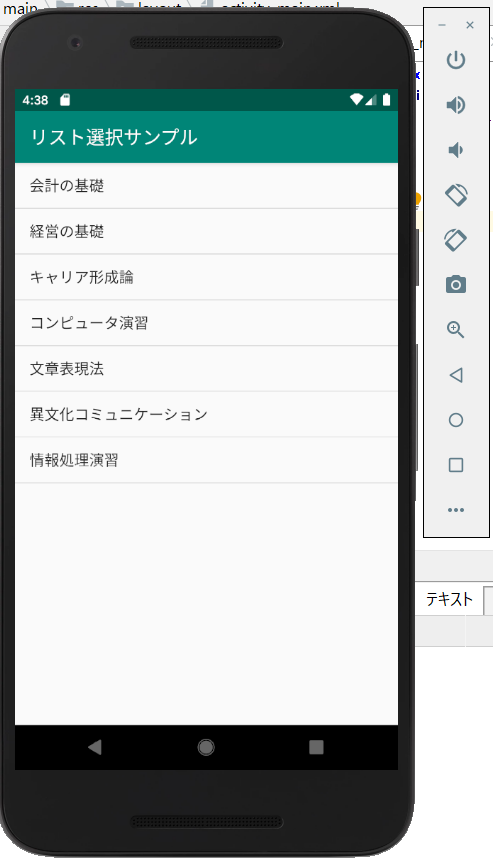

アプリケーションを制作するにあたって必要なプログラムの学習を目的として、新たな本を参照し、サンプルアプリの制作を行う。
前期では一つのアプリ制作を丁寧に紹介する形式の本で流れをつかめたため、後期ではたくさんのサンプル制作に取り組み、研究に活用する。

WINGSプロジェクト 齊藤 新三/著 山田祥寛/監修
株式会社 翔泳社/発行
B5変版・ 416ページ・ 2色
ISBN 978-4-7981-6044-3
発刊日： 2019年7月10日
アプリの画面構成として、今まではGUIと呼ばれる、部品をドラッグアンドドロップする形で配置するプログラムをしてきたが、
今回はテキストで画面構成のプログラミングを行ってみた。
さらに、リストを表示するとそれぞれ該当のメッセージが表示されるようにプログラムを書き換えた。
KUアプリへの活用…アイコンをタップするとその項目に関するリストを表示するプログラム


1.リストに表示したい項目を入力する

2.入力した項目をリストの形で表示するようにレイアウトを調整
3.表示されたリストを押すとメッセージが表示されるプログラムの作成
リストから項目を選択すると別の画面に移動するプログラムの作成「メニュー表から料理を選択し、対応した画面に移動するサンプル」
プログラムの仕組みとしては、画面が完全に切り替わるのではなく、現在の画面の上に新たな画面が表示され、
前の画面は保持されたままになっている。
KUアプリでの活用…リストから選んだ項目に該当する画面に移動するプログラム
画面移動のプログラムを順調に書き込み、アプリ起動に成功したと思いきや、警告メッセージが出てしまう。(MutableMapという項目)
この警告メッセージの特徴はエラーとは異なりエミュレーターによる起動は可能。しかし、正常な起動ができなくなる恐れがあるというもの。
エラーとは異なり警告は正常に起動できるのであれば無視することも可能。しかし、原因を突き止めるに越したことはない。
そこで…出版社から出ているサンプルと見比べてみたところ、同じところで警告メッセージが出ている。
しかし、サンプルでは自分で入力したアプリで起こった不具合がなく問題なく起動ができている。→それ以外の項目に違いがある？(現在調査中)